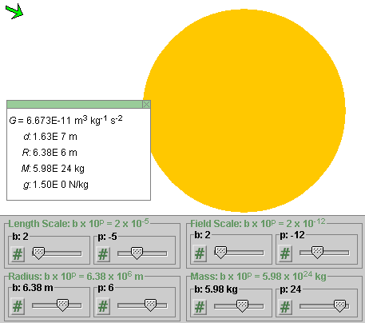
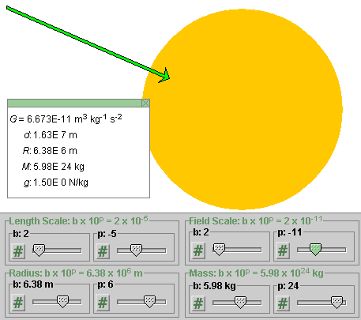
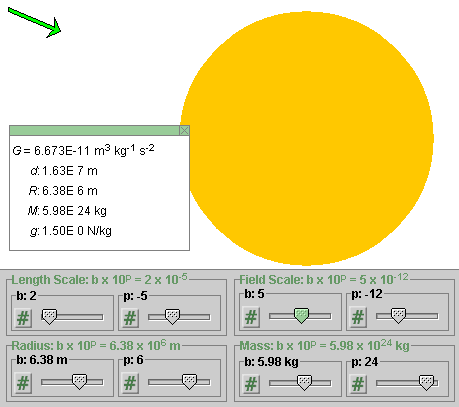
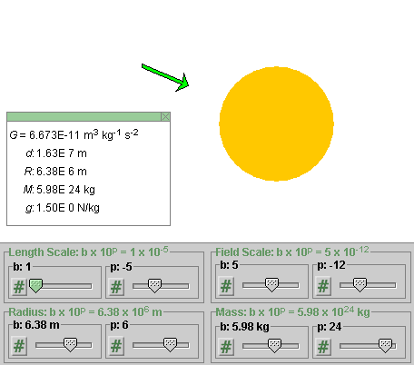

Instructions
This page is designed to get you started using the applet. The applet should be open. The step-by-step instructions on this page are to be done in the applet. You may need to toggle back and forth between instructions and applet if your screen space is limited.

Exercise 1. RESET the applet.
If the applet is not in the Gravitational mode, select that mode and then RESET the applet.
In the default setting, the values for the radius and the mass of the source object are those appropriate for the earth:
 R = 6.38×106 m,
R = 6.38×106 m,
 M =
5.98×1024 kg.
M =
5.98×1024 kg.
Verify that the Radius and Mass sliders are set to these
values and that these values are displayed in the Data box as
well. To display the Data box, select the Data box button
 .
.
Exercise 2. Move the mouse pointer onto the field point, which is the point at which the tail end of the field vector is located. The mouse pointer should change from the four-directional crossed arrows to a cross-hair when it is near the field point and the field point can be dragged. Drag the field point to as close to the surface of the yellow source object as you can.
Watch the value of d in the Data box. d is the distance of the field point from the center of the source object. Compare the value of d to that of R, the radius of the source object. Make them as equal as you can. Depending on where on the surface of the source object you are, you may be able to get d closer to R than elsewhere, because of round-off related to the pixel-graininess of the screen.
Observe the magnitude g of the gravitational field shown in the Data box and the length and direction of the green field vector.
g should be equal to 9.80 m/s2 or close to this value when d is equal to R or close to it, since the values for the radius and mass of the source object are those for the earth. The field vector should be pointing to the center of the source object.
Drag the field point to a point where d = 2R, as closely as you can, and observe the value of g at this point and the length and direction of the field vector.
At d = 2R = 1.28×107 m, the Data box should show g = 2.45 m/s2.
Question 1. How does g vary as you increase d: is g proportional to 1/d or 1/d2?
As you double d, does g get multiplied by 1/2 or 1/22?
Answer. The magnitude of the gravitational field is proportional to 1/d2.
Question 2. How does the direction of the field vector vary as you move the field point?
Answer. It should keep pointing to the center of the source object.
Exercise 3. Increase d to 3R by moving the source object while keeping the field point fixed.
To move the source object, click anywhere inside the source object (except near the field point if that happens to be inside the source object) and drag the source object. When the mouse pointer has the appearance of four-directional crossed arrows , the source object can be dragged.
Question 3. Has g changed to the value you would expect and does the gravitational field vector keep pointing in the direction that you would expect, on the basis of your answers to Questions 1 and 2?
Exercise 4. Repeat all of the above in the Electric mode, but note that the default values in that mode correspond to the electron,
 R = 2.82×10-15 m,
R = 2.82×10-15 m,
 Q = -1.60×10-19 C,
Q = -1.60×10-19 C,
and that the magnitude E of the electric field vector will have a different numerical value at the surface of the source object and will be in units of N/C, instead of N/kg as in the Gravitational mode.
Comment on the electron radius. The value given above is the so-called "classical electron radius". This is a theoretical quantity that is not equal to any real electron radius. In the current quantum theory for the electron, which is consistent with experimental data on electron scattering, no such radius is defined. Thus, don't take the value of the electron radius given here literally, but simply as a small distance that is of the same order of magitude as the radius of the proton which does have some experimental basis.
Exercise 5. Change the value of the source charge from -1.60 C to 1.60 C.
The way to do that easily is to double-click on the charge slider. A dialog will open up that lets you enter the new value. Then press OK.
The direction of the field vector should reverse, pointing outward for positive source charge. Also note the change in color of the source object, from blue to red.
Exercise 6. Change the radius and the mass of the source object, and observe the resulting changes of the field vector. To change the slider settings, you can either drag the slider or double-click on the slider and enter the desired value in a dialog that will pop up. You can make fine adjustments to the slider settings by clicking in the slider groove to the right or left of the slider tab.
Changing the radius should have no effect on the field vector as long as the field point is outside of the source object. For the case when the source object becomes so large that it includes the field point on its inside, see the following section.
The magnitude of the field vector should vary in proportion to the mass of the source object.

Exercise 1. If the applet is not in the Gravitational mode, select that mode and RESET the applet.
As done in the preceding section, drag the field point to as close to the surface of the yellow source object as you can.
Observe the magnitude g of the gravitational field shown in the Data box and the length and direction of the green field vector.
g should be equal to 9.80 m/s2 or close to this value, since the values for the radius and mass of the source object are those for the earth. The field vector should be pointing to the center of the source object.
Exercise 2. Move the field point to d = R/2 and d = R/3, and observe the changes in the magnitude and direction of the gravitational field vector.
You should find
The direction of the field vector should always be towards the center of the source object.
Question 1. What value do you expect for g at the center of the source object? Try it.
Exercise 3. Repeat all of the above in the Electric mode. Do you observe analogous behavior for the magnitude and direction of the electric field vector?
For negative source charge, the field vector should always be pointing towards the center of the source, for positive source charge away from the center of the source.
Exercise 1. Make sure the applet is in the Gravitational mode, and then click RESET. Display the Data box.
Move the field point away from the source object to a point where the magnitude g of the gravitational field is 1.50 N/kg or close to that value. The field vector will be represented at that point by a rather short arrow as in Figure 1 below.

Figure 1
Change the setting of the power p of the Field Scale slider from -12 to -11. The easiest way to do this is to click once to the right of the tab of the p-slider of the Field Scale slider pair. As a result, the arrow representing the field vector will become 10 times longer than before and will look as in Figure 2 below. The value of g shown in the Data box will remain as 1.50 N/kg.

Figure 2
Change the setting of the p-slider of the Field Scale slider pair to -12, and then change the setting of the b-slider of the Field Scale slider pair from 2 to 3 to 4 to 5, by clicking to the right of the slider tab each time. Observe how the arrow representing the field slowly increases in length. Figure 3 below illustrates what you should see at the Field Scale setting 5×10-12.

Figure 3
Note that none of the values displayed in the Data box change during these scale changes.
Exercise 2. With the Field Scale setting at 5×10-12, and all other settings as before, i.e., with all settings as illustrated in Figure 3, change the Length Scale setting from 2×10-5 to 1×10-5.
This will change all pixel distances in the image to half of what they were before. The result is illustrated in Figure 4 below.

Figure 4
Both the radius in pixels of the source object and the distance in pixels of the field point from the center of the source object have been cut in half compared what they were in Figure 3. However, the length of the arrow representing the field vector has not changed. Neither have any of the values displayed in the Data box.
Question 1. What value do you expect for g at the center of the source object? Try to find the answer "experimentally" with the applet as follows.
Exercise 3. Move the field point as close to the center of the source object as you can. Observe the values of d and g displayed in the Data box decrease as you do so. Both should become zero when you reach the center of the source object. However, getting exactly to the center may be difficult to do because of the pixel resolution of the screen.
To make it easier to reach d = 0 and observe the field vector, keep increasing the Field Scale setting and the Length Scale setting as you approach the center of the source object. This will increase the pixel distance between field point and source center and the length of the green arrow, thus making it easier to move the field point ever closer to the source center and making the field arrow large enough to be seen.
In increasing the Length Scale, you will quickly reach a setting in which the entire screen is filled with yellow color because you can see only a portion of the source object near the center of the object.
At the end of this process, the Data box should show d = 0 and g = 0 or something quite close to these values.